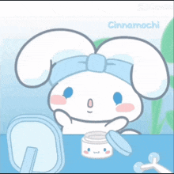
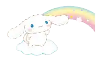

Salsabil Ouni
AI & ML Engineer · Full Stack · Protein Stuff
☁️ Tunisia, Sousse • open to all adventures!

☁️ About Me
Hi, I'm Salsabil ☁️
I'm an AI engineer who's spent time building in Japan and Tunisia, things like Protein engineering, ML in genetics and healthcare , TTS systems, rehab AI, and medical imaging models. Mostly because I genuinely think teaching machines to solve real problems is fascinating.
At the moment, I'm doing something slightly chaotic: pursuing two degrees at once , an Engineering Diploma in AI & Data Science and a Master's in Molecular Medicine AI. It's a lot, but the overlap between the two is where the most interesting problems live.
I speak 5 languages and i like interning abroad. Outside of coding I'm usually organizing events, eating at hackathons or sleeping in conferences.
And as you can tell I'm obsessed with Cinnamoroll ☁️! (You can listen to my favorite cinnamoroll songs by clicking on the music note , they're soo cute!!)
Experience
- Characterized 3D structural microenvironments in the TP53 DNA-binding domain by integrating experimental ΔΔG data with FoldX alanine-scanning to identify stability hotspots and spatially connected residue patches.
- Built an automated Python pipeline for PDB structure selection, hotspot/patch detection, microenvironment scoring, and statistical analysis using FoldX, BioPython, and FreeSASA.
- Validated the association between structural patches and variant impact using Fisher's exact test, Spearman correlation, confounder-adjusted regression, sensitivity analyses, and independent MaveDB functional datasets, identifying solvent burial as the primary driver of the observed signal. GitHub
- Designed an AI-driven Arabic Text-to-Speech system using VITS, achieving 97% intelligibility and human-like prosody.
- Deployed a Python–Svelte web interface containerized with Docker, enabling real-time synthesis with <1.5s latency.
- Developed an AI model to generate medical reports from X-ray thorax images, achieving 96% accuracy.
- Utilized LLM Transformer models, CNN, and Streamlit for deployment.
- Developed "Genki Walk" AI rehabilitation system used by 36+ patients, achieving 91% gait accuracy with MediaPipe & Transformers.
- Built Django–Vue.js architecture deployed on AWS for real-time progress tracking.
- Engineered "Aintone" sales trend prediction via Kintone + PyTorch, achieving 90% accuracy, with Vue.js + Django.
- Showcased at Tokyo Big Sight 2023, attracting 500+ attendees.
- Created a chatbot for generating personalized CVs and cover letters.
- Leveraged Django, TensorFlow, and SpaCy for NLP.
- Contributed to the development of Expert Santé, a medical awareness platform serving 1,000+ users.
- Designed and implemented the frontend using the Angular Framework.
Education
Skills
Projects
Certifications
Languages
Achievement

AIESEC Waseda Japan Global Talent 2023
Selected as a Global Talent out of 22 countries worldwide through AIESEC Waseda, which led to my first internship in Tokyo. Pretty much changed the direction of everything after that.
Aintone at Tokyo Big Sight 2023
Our AI sales trend prediction system Aintone was showcased at Tokyo Big Sight, one of Japan's largest exhibition venues, attracting 500+ attendees.